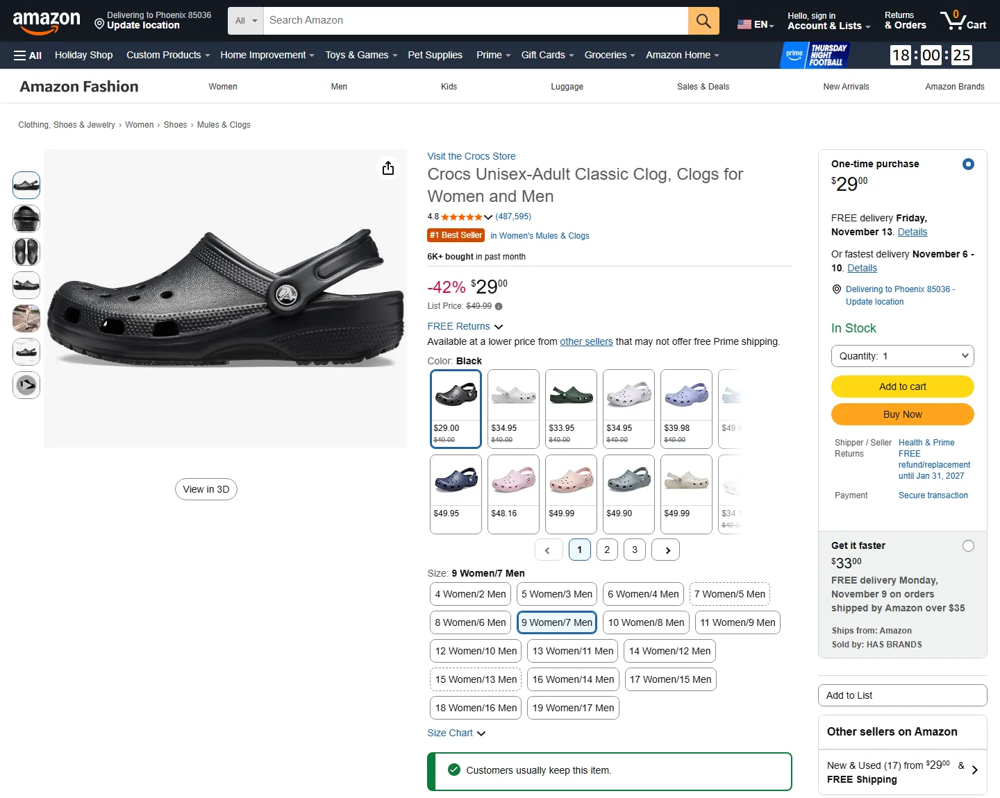
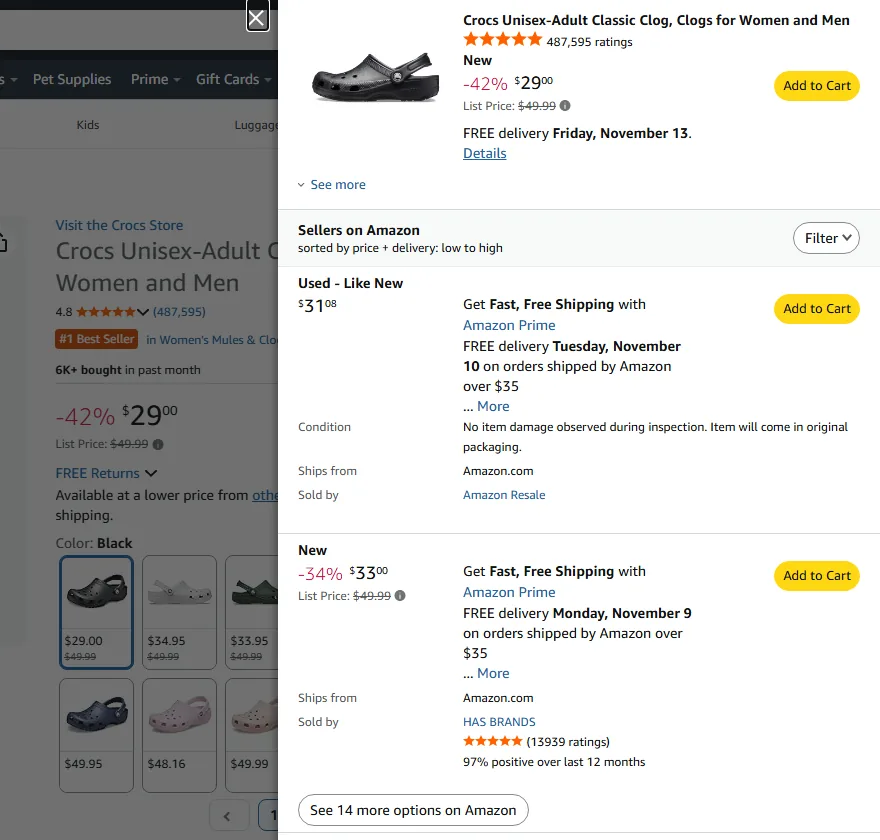
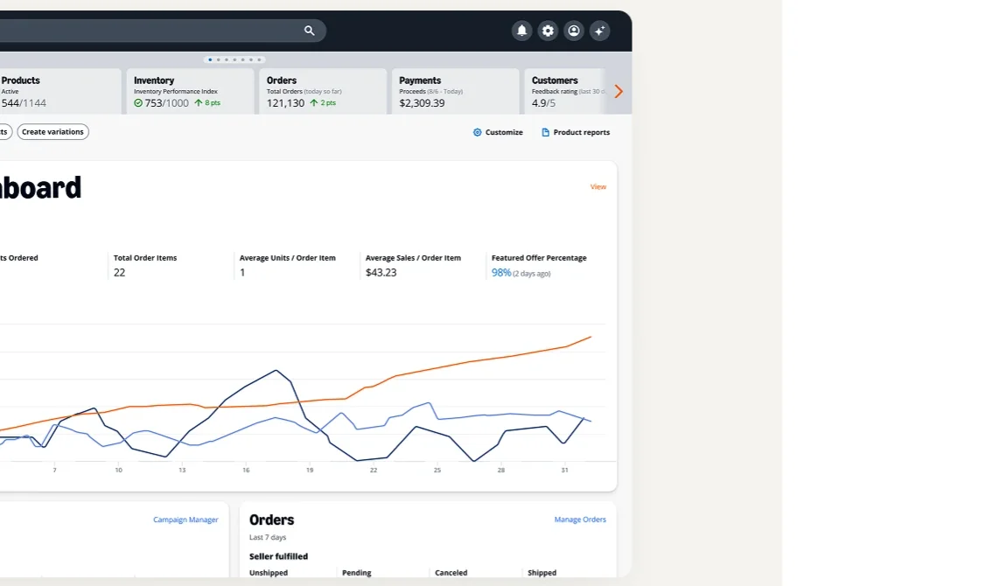
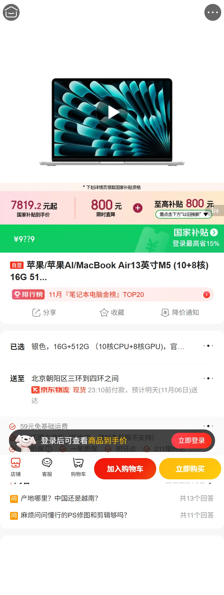
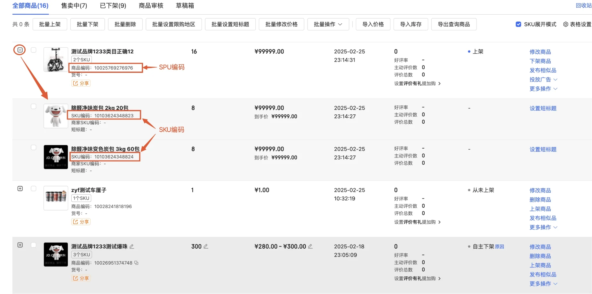
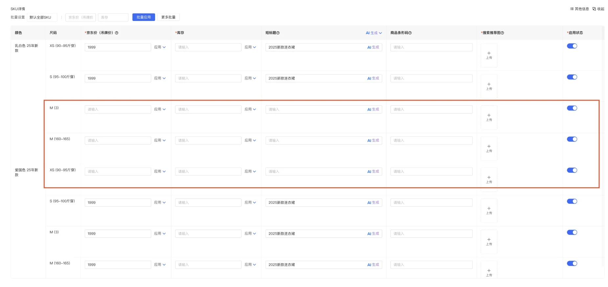
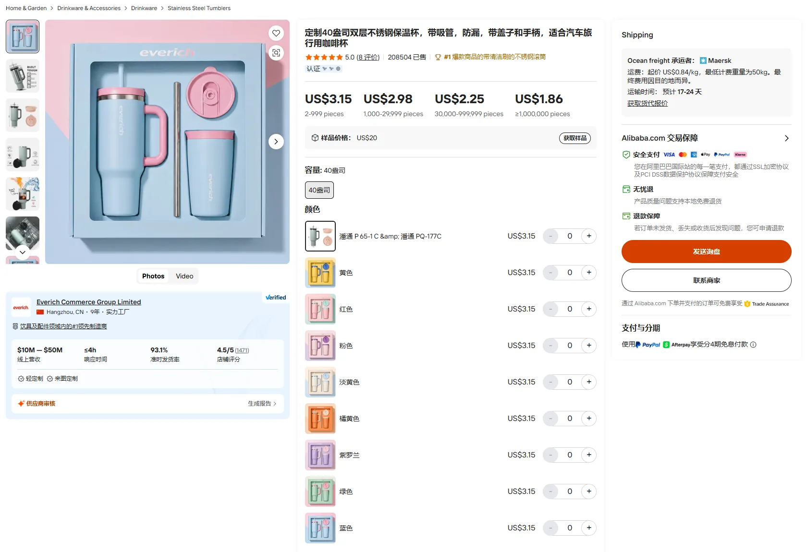
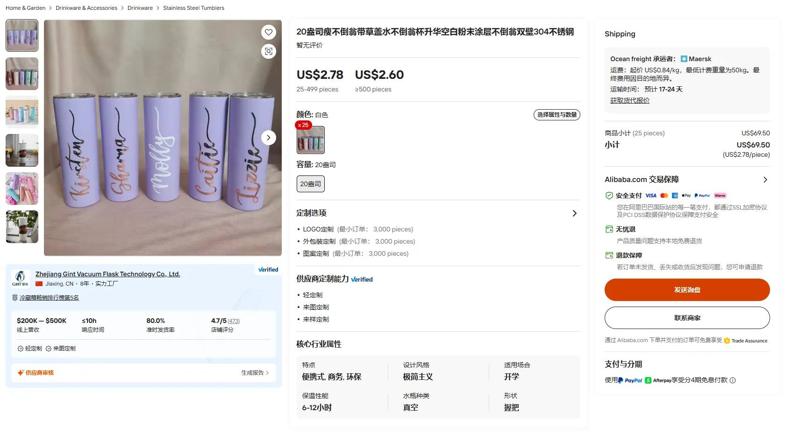
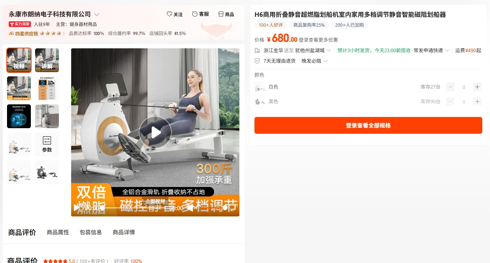
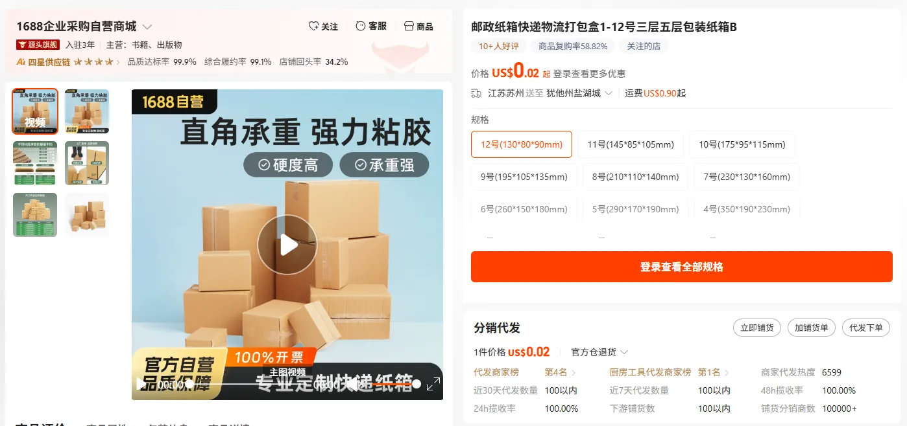

亚马逊、京东、阿里（1688 与 Alibaba.com）的商品详情、价格、库存和商家后台是怎么设计的，以及哪些做法适合搬到 CSS 的 B2B 采购场景里。
标题、图片、属性属于「商品」；价格、库存、配送属于「报价 / SKU」。亚马逊在 Schema 里就把两者拆成 LISTING_PRODUCT_ONLY 和 LISTING_OFFER_ONLY；1688 与国际站共用一套商品底座，只换报价字段。
类目模板规定哪些属性是「销售属性」，颜色 × 尺码自动生成 SKU 矩阵。京东明确：改销售属性维度会删旧 SKU、评价跟着丢，所以给了 45 天找回和「停用」开关。
基础价、限时促销价、身份价（会员 / 企业）、数量阶梯价并存；详情页上的「到手价」是实时计算的。划线价三家都有严格规则，亚马逊 2026-04 起要求外部或站内成交佐证。
可售、预占（下单未付款）、在途、不可售分开记；按仓或配送区域给出「有货 / 在途 / 可预订」。淘宝和 1688 让卖家选「拍下减」还是「付款减」；京东企业接口是先预占、再确认。
发品向导（类目 → 属性 → SKU 矩阵 → 价格库存 → 详情）、表头批量应用、Excel 导入、单独的「导入价格 / 导入库存」、状态页签（在售 / 下架 / 审核 / 草稿 / 回收站）、问题清单（被抑制、违规）。
起订量、阶梯价、混批、样品价、定制起订量、询价 / RFQ、商品池与协议价、未税价、主子账号审批、账期。CSS 已有客户价档和报价单，缺的主要是数量阶梯和库存预占。
从上往下是「谁定义 → 卖什么 → 谁卖 → 卖哪个规格 → 多少钱、有没有货」。三家的名字不同，但层次一致；最大的分叉在第三层：亚马逊允许很多卖家挂在同一个商品上，京东和阿里是一店一个商品。
is_key_prop 关键 / is_sale_prop 销售 / is_item_prop 商品属性properties 为 pid:vid 组合，每个 SKU 独立价格与库存| 维度 | 亚马逊 | 京东 | 阿里（1688 / Alibaba.com） |
|---|---|---|---|
| 商品主键 | ASIN（平台目录）+ 卖家 SKU（报价）。上架先按 GTIN 匹配已有 ASIN，匹配不到才新建。 | SPU = 京麦「商品编码」；SKU 编码就是前台链接 item.jd.com/{SKU}.html 里的数字。 | 淘系：SPU（产品）→ 商品 Item → SKU；1688 用 offerId + specId；国际站 product + SKU。 |
| 一品多商 | 是。多个卖家共享同一详情页，各自出价、成色、配送，竞争 Featured Offer（原 Buy Box）。 | 否。一店一个商品；自营与 POP 分开。 | 否。一个 offer 属于一个供应商；同款靠搜索与榜单比较。 |
| 属性模板 | Product Type Definitions：每个类型一份 JSON Schema，requirements 区分「商品事实 + 销售条款」「仅商品」「仅报价」。 | 属性类型：1 关键属性、3 可变属性、4 销售属性；部分品类标准色、标准尺码已结构化。 | 类目属性带 is_key_prop / is_sale_prop / is_item_prop、must、multi 标记。 |
| 基础价与促销价 | our_price 基础价；discounted_price 带起止时间；卖家自设 minimum/maximum_seller_allowed_price 护栏。 | 京东价是最终购买依据；规则列出 15 种价格类型（PLUS 价、企业会员价、秒杀价、预售价等）。 | 1688 报价方式 quoteType 0–3；淘宝一口价 / 拍卖；国际站下单品价或询盘品 FOB 区间。 |
| 展示价 | Featured Offer 的价格；Business 买家另看 Business Price 和阶梯价表。 | 「预估到手价」= 京东价或专属价 − 可用优惠，实时计算，按区域可能不同，以结算页为准。 | 1688 搜索展示最小起批档价格；L 会员看到身份价；未登录提示「登录查看更多优惠」。 |
| 划线价 | List Price 需核验；2026-04-23 起须有外部零售商近期在售或站内作为 Featured Offer 成交过。Typical Price = 90 天非促销成交中位数。 | 划线价只是参考价（吊牌价、指导价或曾展示价）；企业 VOP 接口已不允许展示划线价。 | 1688 页尾释义「划线价并非原价」；国内受《明码标价和禁止价格欺诈规定》约束。 |
| 数量阶梯价 | 仅 B2B 报价：quantity_discount_plan 最多 5 档，每档必须比上一档便宜。 | 慧采有「多买多优惠」，规则未公开；零售端无。 | 核心能力：1688 priceRanges[{startQuantity, price}]；国际站最多 4 档，MOQ 取最低档。 |
| 库存状态 | 自发货卖家直接写数量；FBA 五类：可售、在途、预留、不可售、核查中。同一 SKU 两种渠道都开时先用 FBA 库存。 | POP 按 SKU 维护总量；企业接口按省市县镇查区域库存，状态码 33 现货 / 39 在途 / 40 可配货 / 36 预订 / 34 无货。 | SKU 级 amountOnSale；淘宝 with_hold_quantity 预扣数量；1688 现货与订货（按数量给出货天数）。 |
| 扣减时机 | 官方未公开前台规则（未查实）。 | 企业接口：下单先预占，调「确认订单」才生产，预占单可取消。零售在线支付 24 小时未付自动取消。 | 可选：淘宝 sub_stock 1 拍下减 / 2 付款减；1688 invReduceType 1 下单减 / 2 付款减。 |
| 改库存接口 | PATCH merge 只改 quantity，不动处理时间等其他字段。 | ware.stock.sku.set 全量设置；增量接口在下线。 | 1688 modifyStock 只收增量（+5 / −9），有规格必须按 specId 改。 |
| 商家后台 | Seller Central：Add Products、表格批量、Variation Wizard、Automate Pricing、Pricing Health、Listing 问题与抑制。 | 京麦：发品向导、SKU 表批量应用、Excel、导入价格 / 导入库存、状态页签、回收站。 | 1688 商家工作台（千牛）；国际站 My Alibaba：Schema 发品、星等级（PIS 商品信息分）。 |
| 子账号 | 按功能类别分 View / View & Edit / Admin 三级。 | 主账号建角色再建子账号；京麦与商家后台权限分别配。慧采主账号最多 19 个子账号并审批订单。 | 国际站最多 5 个子账号，角色 Administrator / Sales Manager / Sales Representative / Sales Assistant。 |



merchant_suggested_asin 指定挂靠哪个 ASIN。parentage_level、child_parent_sku_relationship、variation_theme 三个属性；父子须同类型、同品牌。our_price、discounted_price（带有效期）、上下限护栏、quantity_discount_plan、audience（ALL 或 B2B，同一 SKU 可挂多份报价）。DEFAULT 直接写数量；FBA 渠道 AMAZON_NA 等不能写，数量由入仓实收决定。issues（问题和处置建议），提交时可用 VALIDATION_PREVIEW 只校验不落库。


findWareById）：类目、品牌、属性、按颜色分组的图片、PC 与移动端详情、京东价 / 市场价 / 成本价、outerId、条码、运费模板 transportId、时效模板 promiseId。outerId）用来对接商家 ERP。jdPrice 仅供参考、salePrice 为实际下单价、nakedPrice 未税价；可按企业员工设一口价并限购。



alibaba.product.get）：productType 批发 / 询盘；skuInfos[] 每个 SKU 有 price、amountOnSale、consignPrice（代发价）、takeSamplePrice（拿样价）。saleInfo 集中放报价方式、起批量、阶梯价、混批、减库存方式；reserveInfo 放订货（按数量区间给出货天数）。webSite=1688/alibaba 参数：1688 和国际站共用一套商品底座。market 区分下单品与询盘品。quoteType：0 商品级阶梯价、1 按规格报价、2 / 3 规格 × 区间报价，可以既按 SKU 又按数量定价。minOrderQuantity 1–99999；可「按手卖」（1 手 = 12 件）；mixWholeSale 混批开关。sub_stock：1 拍下减、2 付款减（集市卖家默认拍下减，商城默认付款减）；with_hold_quantity 是付款减模式下被未付款订单占住的数量。invReduceType 下单减 / 付款减；modifyStock 只收增量，传 0 报错。CSS 是餐厅（买家）、分销商（供应商 / 门店）、厂商三方的采购平台，最该对照的是 Amazon Business、京东慧采 / VOP、1688 和 Alibaba.com 这几条 B2B 线。下表最后一列是 CSS 当前 main 分支的情况。
| 能力 | 亚马逊 Business | 京东 慧采 / VOP | 1688 / Alibaba.com | CSS 现状 |
|---|---|---|---|---|
| 客户专属价 | Business Price，仅企业买家可见 | 企业专享价；VOP 按员工设一口价 | 1688 会员等级价、渠道专享价 | 已有：门店级 price_tier 价档，客户挂 price_tier_id，价档价格带版本记录（操作人、变更类型） |
| 数量阶梯价 | 最多 5 档，每档必须更低 | 「多买多优惠」，规则未公开 | 1688 商品级或规格级阶梯；国际站最多 4 档 | 没有。只有 min_sell_unit_qty（最小销售单位） |
| 起订量 MOQ | — | VOP lowestBuy 最低起购量 | 核心字段：起批量、按手卖、定制起订量 | 没有独立字段 |
| 未税价 / 税 | 按企业税务信息开票 | nakedPrice 未税价 + 税率 | 国际站按贸易术语报价 | 已有税率字段（分销商线 tax、厂商线 tax_percent） |
| 询价 / 报价 | RFQ（$10,000 或 999 件以上），可接电子寻源系统 | 单供应商议价、多供应商竞价 | 询盘、RFQ（每条最多 10 家报价）、卖家起草订单 | 已有报价单模块（quotation），供应商把商品加进草稿报价单 |
| 商品池 / 采购目录 | 采购清单、Guided Buying | 商品池，池外需申请；工业品「一物一码」映射客户物料编码 | — | 已有雏形：restaurant_product 是餐厅自己的采购清单，可关联多个供应商 |
| 库存预占 | 未公开 | 先预占、再确认，可取消 | 拍下减 / 付款减可选 | 没有独立预占桶。库存流水 store_product_stock_movement 在下单时直接扣减，取消时回补 |
| 审批与账期 | 审批流、按发票付款 | 主子账号审批、金采先采后付、账期 | 1688 先采后付；国际站首付 + 尾款 | —（不在本次调研范围） |
CSS 的 /products 底下是三套实体：厂商的 manufacturer_product、分销商的 vendor_product → store_product、餐厅的 restaurant_product。放到上面的骨架里看：
| 平台的层 | CSS 对应 | 已经做到的 | 和平台比还差的 |
|---|---|---|---|
| 类目与属性模板 | product_category、product_attribute（厂商专属） | 厂商可自定义属性和取值（含颜色色值） | 分销商和餐厅商品没有属性能力；属性不区分「关键 / 销售 / 普通」 |
| 目录商品（SPU / ASIN） | manufacturer_product | 型号唯一、技术参数 JSONB、变体轴 + 变体、软删 | 只有厂商线有；分销商线的 product 只是全局名字字典 |
| 报价 / Listing | vendor_product（可挂 manufacturer_product_id）→ store_product | 结构上已经是「供应商报价挂到厂商目录商品」，类似亚马逊卖家 SKU 挂到 ASIN | 买家侧没有「同一厂商商品、多家供应商报价」的对比视图（亚马逊图 2 那种） |
| SKU | store_product 一行即一个 SKU；厂商线 variation | 厂商线有变体；分部可覆盖库存和价格 | 分销商线没有销售属性，规格靠名称区分；没有 SKU 级启停用 |
| 价格 | product_price（只追加）+ price_tier / price_tier_version | 价格历史完整；有客户价档；当前价取默认价档的最新一条 | 没有数量阶梯、促销价有效期、价格上下限护栏；8 月规格记录了「无价格记录时显示 0，和真免费分不开」 |
| 库存 | store_product.in_stock + 库存流水 | 每次变动有原因（入库、下单、改单、取消、打包调整、核销）和余额 | 没有预占、在途、不可售之分；没有按仓或区域的库存状态 |
| 上下架与状态 | is_published 布尔 | 厂商线默认未发布 | 没有草稿 / 待审 / 在售 / 下架状态机；8 月规格记录分销商线无法下架 |
| 商家后台 | UploadProducts、Catalog OCR 导入、厂商批量编辑 | 批量导入新商品、OCR 识别目录 | 没有「导入价格 / 导入库存」、增量改库存接口、问题清单 |
「8 月规格」指仓库里的 docs/products业务规格-2026-08-21.html，基于当时 support-demo 分支代码逆向整理；其中列出的缺陷落地前需按当前代码复核。价档、库存流水、阶梯价缺失这三点已在 2026-11-05 的 main / test / uat 三个分支上核对过。
is_published 布尔商品状态：草稿 → 待审（可选）→ 在售 → 下架 → 已删除（软删）；SKU 单独有启用 / 停用。列表页按状态分页签，加回收站。
参考：京东状态码与页签（图 5）、亚马逊 BUYABLE / DISCOVERABLE。给 store_product 加一张阶梯表（起始数量、单价），和现有客户价档叠加；校验「每档单价必须低于上一档」。起订量单独成字段，下单时校验。
quoteType 2 / 3、亚马逊 quantity_discount_plan。
拆成基础价、限时促销价（起止时间）、客户价档价、合同价；展示价由规则实时算出，订单行保存下单时的快照。供应商自设价格上下限，防止手误改成 0 或多打一个 0。
参考：亚马逊our_price / discounted_price / min-max 护栏；京东 VOP salePrice / nakedPrice。
可售 = 在库 − 预占。下单先预占，供应商确认或发货时扣减，取消或超时释放。现有库存流水已记录原因和余额，可在流水上加预占维度，不必推翻重来。
参考：淘宝with_hold_quantity、1688 invReduceType、京东 VOP 先预占后确认。
列表页给「导入价格」「导入库存」两个独立入口（Excel），SKU 表头「批量应用」；对外接口只接受增量（+5 / −3）并按 SKU 改，避免全量覆盖把别的字段清空。
参考：京麦（图 5、图 6）、1688modifyStock、亚马逊 PATCH merge。
CSS 已有 vendor_product.manufacturer_product_id，可以给餐厅做一个「这件厂商商品，哪几家分销商在卖、各自什么价、什么时候能到」的视图，类似亚马逊的 All offers。
厂商线已有分部级库存覆盖，可以推广为「现货 / 在途 / 可预订 / 缺货」状态加预计到货日，在商品详情和下单页显示，而不是只显示一个数字。
参考：京东区域库存状态码 33 / 39 / 40 / 36 / 34、图 4「现货，预计明天送达」。给供应商和厂商一个问题列表：缺图片、缺分类、价格为 0、库存为 0、长期无销量，每条附处理入口；首页待办里显示数量。
参考：Seller Central「Fix search suppressed listings」（图 3）、Listingissues、国际站 PIS 商品信息分。